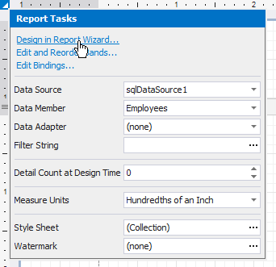
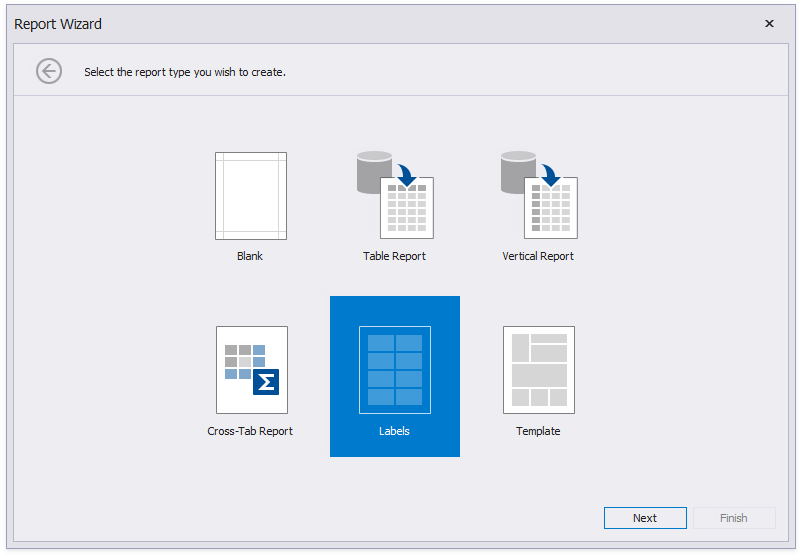
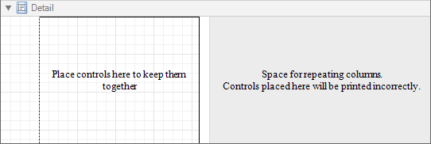
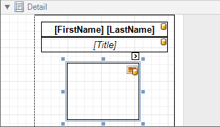
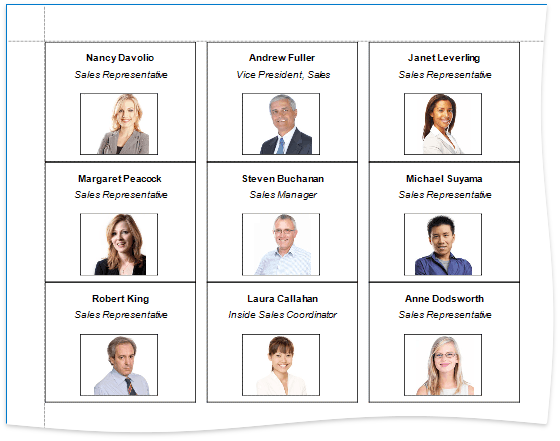

Labels and Badges
This tutorial describes the steps to create a label report that contains employee badges.
Create a new report and bind it to a required data source (for instance, to a table that contains information about employees).
Click the report's smart tag, and in the invoked actions list, click Design in Report Wizard.

The wizard guides you through the process of creating a label report. Refer to Label Report for detailed instructions on the wizard's steps.

After performing the above steps you will see that the report's Detail band is now divided into three differently colored areas. The first area at the left-hand side indicates the actual available band area for controls to be placed within it. The gray area at the right-hand side is intended for the columns in which labels will be displayed, so it cannot be occupied by controls. Finally, the white area specifies an indent between the available and reserved areas.

Drop the required fields from the Field List onto the available Detail band's area and adjust the layout.

If required, you can apply mail merge to combine several fields within the same Label control.
For the Picture Box control, you can set its Sizing property to Zoom Image.
Switch to Print Preview to see the resulting report.
